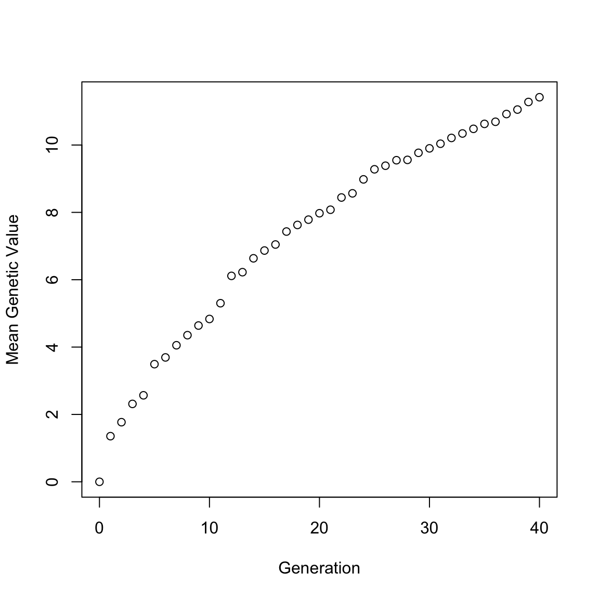

In a chicken breeding program, the breeders aim to increase the 56-day body weight. They plan to conduct 40 discrete generations of selection.
The base population consists of 100 animals, of which 50 are male and 50 are female. In each generation, the best 5 males are selected on the basis of their phenotypic value for a single polygenic trait (56-day body weight) and mated to the females (N=50) to produce 100 replacement animals.
# install.packages("AlphaSimR")
library(AlphaSimR)## Warning: package 'AlphaSimR' was built under R version 3.4.4## Loading required package: R6# Creating Founder population
founderPop = runMacs(nInd=1000, nChr=10, segSites=5000)# Setting Simulation Parameters
SP = SimParam$new(founderPop)
SP$addTraitA(nQtlPerChr=100)
SP$setGender("yes_sys")
SP$setVarE(h2=0.5)# Modeling the Breeding Program
pop = newPop(founderPop)
genMean = meanG(pop)
for(generation in 1:40){
pop = selectCross(pop=pop, nFemale=50, nMale=5, use="pheno", nCrosses=100)
genMean = c(genMean, meanG(pop))
}plot(0:40, genMean, type="p", xlab="Generation", ylab="Mean Genetic Value")